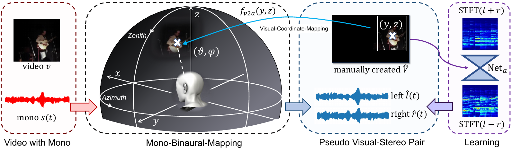

Recursive Visual Sound Separation Using Minus-Plus Net

Abstract
Stereophonic audio, especially binaural audio, plays an essential role in immersive viewing environments. Recent re- search has explored generating stereophonic audios guided by visual cues and multi-channel audio collections in a fully- supervised manner. However, due to the requirement of professional recording devices, existing datasets are limited in scale and variety, which impedes the generalization of supervised methods to real-world scenarios. In this work, we propose PseudoBinaural, an effective pipeline that is free of binaural recordings. The key insight is to carefully build pseudo visual-stereo pairs with mono data for training. Specifically, we leverage spherical harmonic decomposition and head-related impulse response (HRIR) to identify the relationship between the location of a sound source and the received binaural audio. Then in the visual modality, corre- sponding visual cues of the mono data are manually placed at sound source positions to form the pairs. Compared to fully-supervised paradigms, our binaural-recording-free pipeline shows great stability in the cross-dataset evalua- tion and comparable performance under subjective prefer- ence. Moreover, combined with binaural recorded data, our method is able to further boost the performance of binaural audio generation under supervised settings.
Demo Video
Materials
Code

Citation
@inproceedings{xu2021visually,
title={Visually Informed Binaural Audio Generation without Binaural Audios},
author={Xu, Xudong and Zhou, Hang and Liu, Ziwei and Dai, Bo and Wang, Xiaogang and Lin, Dahua },
booktitle={Proceedings of the IEEE conference on computer vision and pattern recognition (CVPR)},
year={2021}
}